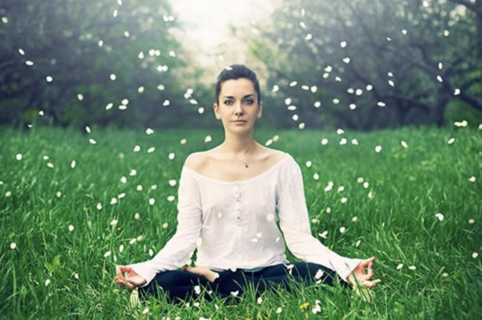

Meditation for Resilience
By: Brooklyn
Introduction
Meditation for Resilience: How to Cultivate Inner Strength and Emotional Stability
In our fast-paced and often unpredictable world, resilience is a valuable asset that can help us navigate life's challenges and setbacks with grace and ease. Fortunately, resilience is not an innate quality that some people are born with and others are not. Rather, it is a skill that anyone can learn and develop through daily practices like meditation.
Meditation has been scientifically proven to enhance emotional regulation, stress management, and overall well-being. By cultivating mindfulness and self-awareness, we can become more resilient to stress and adversity, and bounce back from setbacks with greater ease.
In this section, we will dive deep into practices and strategies for using meditation to build resilience. From simple breathing exercises to more advanced visualizations and mindfulness techniques, you will learn how to develop greater inner strength and emotional stability that can help you face life's challenges with greater equanimity and composure.
Our guided meditations and practical tips are designed to help you take the first step towards a more resilient you. Whether you are dealing with a particular stressor or just seeking to build greater emotional resilience, this section has everything you need to get started on your meditation journey.
So take a deep breath and let's get started on your journey towards greater resilience and well-being!
ad space
What is Resilience?
In today's fast-paced world, life can be unpredictable and challenging. Building resilience is an essential part of managing stress and adversity effectively. Resilience is the ability to cope with difficult situations, adapt to change, and recover from setbacks. It is an essential skill for a happy and successful life. In this article, we'll explore what resilience is and how meditation can help you develop it.
Resilience is not some inherent trait that you're born with; it's a learned skill. Anyone can build resilience with practice and determination. Resilience doesn't mean you'll never feel stress, disappointment, or failure. Instead, it means that you have the skills to cope with them effectively, recover quickly from setbacks, and continue to move forward with your life.
Meditation is a powerful tool for building resilience. Research has shown that meditation can help people reduce stress, improve concentration, boost their immune system, and improve their overall well-being. When you meditate regularly, you learn to focus your attention on the present moment, which can help you find calmness and perspective in even the most challenging situations.
Meditation can also help you develop a broader perspective on life. Instead of getting lost in the tangle of problems and stresses, you learn to step back and observe them from a distance. This can help you see things more clearly and find creative solutions to difficult problems.
In conclusion, resilience is an essential skill for living a happy, healthy life. Meditation can be a powerful tool for building resilience, reducing stress, and improving well-being. By practicing meditation regularly, you can develop the skills you need to cope with life's difficulties effectively.
ad space
The Science of Meditation and Resilience
Meditation is an ancient practice that has been gaining immense popularity in recent times for its numerous cognitive, physical, and emotional benefits. Among the various benefits of meditation, one of the most significant is its role in enhancing resilience. Resilience refers to an individual's ability to cope with stress, adversity and bounce back from challenging situations. In today's fast-paced world, resilience is a trait that is much in demand to live a healthy and happy life amidst increasing stressors. This is where meditation plays a powerful role.
Through various scientific studies, researchers have been able to demonstrate the positive impact of meditation on resilience. By practicing meditation regularly, individuals can learn to regulate their emotions and reduce stress, factors that make one more resilient in the face of adversity. Meditation has been found to increase activity in the prefrontal cortex, the part of the brain responsible for regulating emotions and decision-making. It also increases alpha waves in the brain, reducing feelings of anxiety and stress.
Moreover, meditation reduces the activity of the amygdala, which is responsible for processing emotions like fear and anxiety. This leads to less reactivity to stressors and better coping mechanisms. The practice of meditation also helps individuals cultivate a sense of inner calm and equanimity, which helps them to respond wisely even in difficult situations.
In conclusion, the science behind meditation and resilience is compelling. Regular practice of meditation has a significant positive impact on one's capacity to cope with adversity, regulate emotions and cultivate resilience. So, take action today and start your journey towards greater resilience through meditation!
ad space
Types of Meditation for Resilience
In today's fast-paced world, building resilience to handle stress and challenges is crucial to maintain good mental and emotional health. While there are several methods to build resilience, meditation has shown remarkable effects in reducing stress and improving emotional well-being. In this article, we will dive into different types of meditation suitable for building resilience.
1. Mindfulness Meditation: Mindfulness meditation involves focusing on the present moment and accepting it without judgment or criticism. This technique is helpful to people who suffer from anxiety and depression. When you stay aware of your thoughts without reacting to them emotionally, it brings a sense of calm that helps build resilience.
2. Loving-Kindness Meditation: This meditation technique focuses on cultivating feelings of love and kindness towards yourself and others. People who practice loving-kindness meditation often report feeling more compassionate and connecting better with others. It helps to create a positive emotional balance, making it easier for people to deal with difficult situations.
3. Transcendental Meditation: Transcendental meditation involves repeating a mantra or word to help focus your mind. This type of meditation is suitable for people with a busy lifestyle, where stress is high. It helps reduce stress, anxiety, and manage emotions better, making it easier to bounce back when faced with challenging situations.
4. Yoga Meditation: Yoga meditation involves focusing on your breath and combines physical poses with meditation. It helps you build resilience by reducing stress levels and promoting self-awareness.
Building resilience through meditation takes practice, so pick a type of meditation that appeals to you, and start slow. With time, you can develop a regular meditation practice and improve your ability to handle challenging situations with grace and poise.
ad space
Tips for Starting a Meditation Practice
Meditation for Resilience: Tips for Starting a Meditation Practice
Meditation has been used as a therapeutic tool for centuries, and it has gained a lot of popularity in recent years. The practice of meditation helps you to connect with your inner peace and address your physical and emotional needs in a more profound way. It is a powerful way to enhance your resilience and allow your mind and body to heal from stress, trauma, and anxiety.
If you're interested in starting a meditation practice, there's no better time than now. Here are some tips to help you get started.
1. Find a Quiet and Comfortable Place
One of the essential things to consider when starting a meditation practice is finding a quiet and comfortable place where you feel calm and focused. This spot can be in your room, a quiet outdoor space, or wherever you feel most comfortable.
2. Determine Your Practice
There are different types of meditation practices available. Some types will suit your needs and goals more than others. You can research and determine the practices that align with your objectives, such as stress relief, positive changes, clarity, or resilience.
3. Set a Time and Duration
Dedicate a specific time each day to meditate, and gradually increase your practice's duration to help build your routine. Starting small and consistently can have big benefits down the road.
4. Focus on Your Breath
When meditating, focus on your breath and let your thoughts wander away without judgement. You can count your breathes or even recite a short mantra.
Meditation is a life-changing practice that can lead to remarkable outcomes, whether you're looking to reduce anxiety, build resilience or cultivate inner peace. These are some starting tips that will guide you towards a successful practice, but remember to explore different approaches and find what works best for you. Happy meditating!
ad space
Benefits of Meditation Beyond Resilience
Meditation is an ancient practice that has gained new-found popularity in recent times. People across the world have discovered its benefits beyond spirituality and have incorporated it as a way of life. Meditation is a tool that helps people build resilience, combat stress, and achieve inner peace. However, there is still a vast majority unaware of the manifold benefits that meditation can offer.
Meditation is not just a means to build resilience; it is a powerful tool that helps one in every aspect of life. Meditation can improve relationships, help people heal faster, sharpen focus, and enhance creativity. It can also help people cope with chronic pain and reduce anxiety.
A study conducted by the Harvard Medical School revealed that meditation can change the brain's structure and function positively. It increases the production of tissue in the prefrontal cortex, an area of the brain responsible for decision making, attention, and awareness. Essential pathways of the brain that regulate emotions, stress responses, and immune system function are also positively influenced by meditation.
Moreover, the study also found that meditation increases the production of dopamine, the happy hormone that improves one's mood, focus, and motivation. It also increases serotonin, the hormone that regulates anxiety and mood.
Meditation is not just limited to physical benefits but also extends to increased self-awareness and mental stability. It helps people become more mindful of their emotions, thoughts, and behaviors. This increased sense of self-awareness helps people develop a positive outlook towards life and manage emotions better.
In essence, meditation is far more than just a means of building resilience. Its benefits extend to every aspect of life, and it is an invaluable tool for achieving emotional, mental and physical balance.
ad space